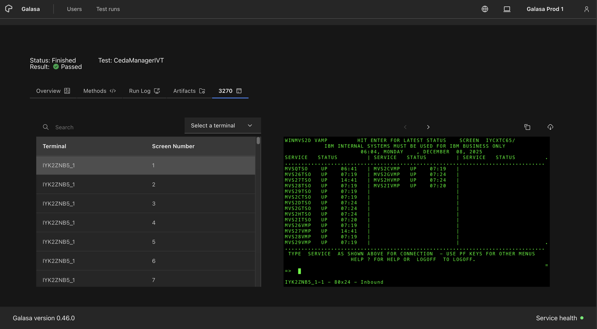
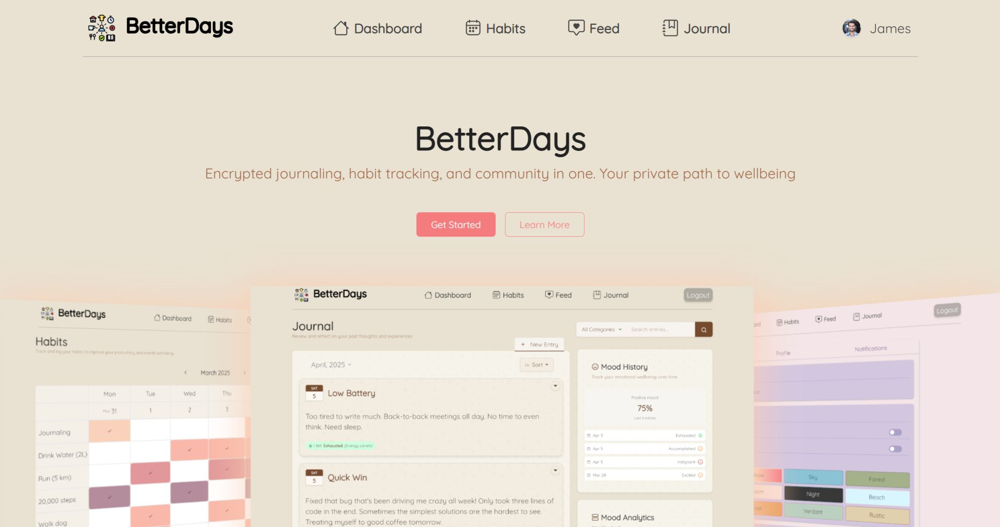
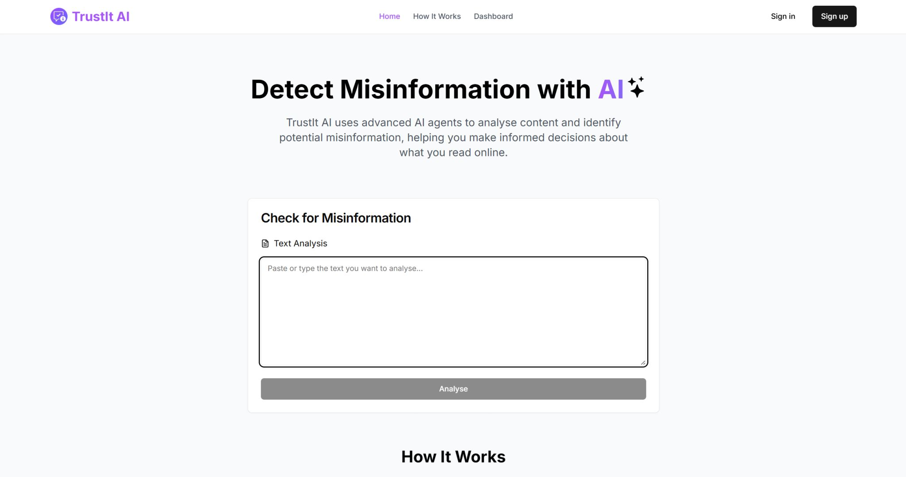
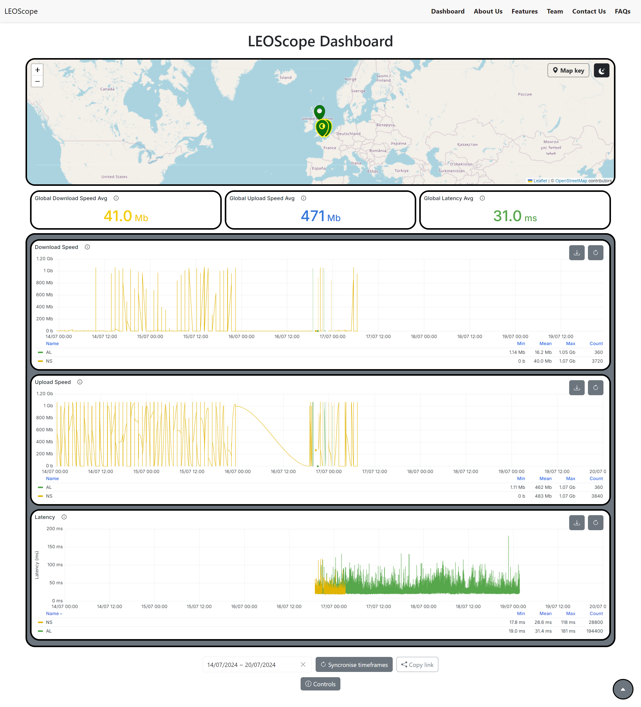
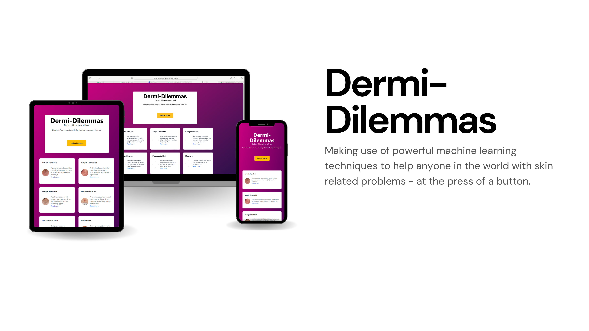
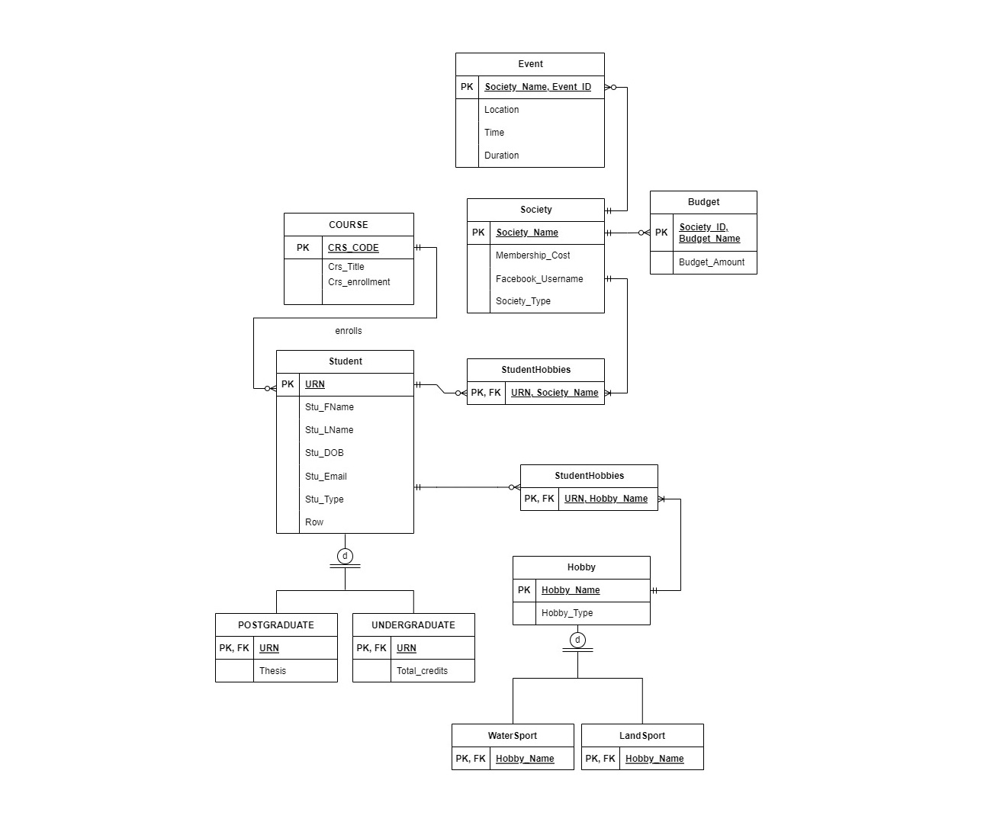

Firstly, a little bit about Galasa. Galasa is an open source testing framework that enables users to automate testing across various other testing platforms via management tools with deep integration with ZOS applications. For example, you could use Galasa with a Selenium manager to click through your website, then use another manager to contact your backend and ensure your data has correctly updated.
Over the year, I've made 750 contributions to Galasa, an open-source enterprise test automation framework for hybrid-cloud applications.
Starting out primarily in frontend, my goal was to become a true full-stack contributor. Thanks to an amazing team, I’ve been able to work across the entire stack—from building Next.js UIs with the Carbon Design System to writing backend microservices in Java, building Golang CLI features with Cobra, and managing cloud-native infrastructure with Docker, Kubernetes, and ArgoCD.
Here are a few highlights from the past year:
Key Technical Contributions: Worked on a variety of CICS requirements, including building a 3270 terminal viewing UI, automating Kubernetes client-java updates via GitHub Actions, and unblocking a critical barrier for the Galasa 1.0.0 release by implementing Personal Access Token (PAT) expiry logic.
Client Impact & Presenting: Stepped outside my comfort zone to co-present at an internal conference to over 20 clients and many more senior IBMers. Happy to say we successfully won over an enterprise adopter of Galasa!
AI & Innovation: Led a team of 7 grads and placement students to build an MCP server project that dynamically parses, summarises, and categorises Galasa run logs using local LLMs. I also attended IBM’s patent incubator program and gained a deep understanding of protecting business IP.
Culture: Beyond the code, it was a blast managing the site-wide event "Hursley Minigames" and contributing to lots of charity events such gardening for a local youth group and serving as an AI ambassador to Bristol Free School. A huge part of my day-to-day life also included the time I spent at lunch with my fellow placement students, so a massive thank you to you all for such a lovely year of pool, bouldering, frisbee, and game nights!
Galasa's tech stack
- Source code management: Git/Github(public).
- Command-line client: Golang, native go unit tests.
- Front-end: Typescript, Next.js, Carbon Design System, Jest.
- Servlet layer: Java, running in an OSGi felix environment, Junit.
- Database layer: CouchDB and ETCD.
- Build systems: Github actions, bash scripting.
- Containers: Rancher desktop, Docker files/images, minikube.
- VSCode
- Other Infrastructure: Kubernetes, ArgoCD, Helm

This web application is a combination of a habit tracker, journal and social media feed. Our group's was aim to empower vulnerable individuals to achieve their personal goals and keep them on track. It tackles SDG 10 (reduced Inequalities) by providing an accessible platform to set and track goals, share updates, and visualise progress - all whilst simultaneously encouraging SDG 3 (good health and well-being). The app features things such as habit streaks, accountability partners, accessibility features, weekly email summaries, comment moderation via sentiment analysis from Gemini and much more. It also aids in logging worker's tasks and time via our journaling feature.
My key responsibilities included managing the project, the habit and feed pages, and the completion of the settings page.

This hackathon project had our team competing with over 500 competing hackers at Encode CLub, London 2025. I'm very happy to say our agentic AI project "TrustIt AI" cracked the top 12 projects and succeeded in the goal of identifying incorrect or misleading information on the web!
My key responsibilities included the frontend design, as well as some help with backend development and prompt engineering.
In a nutshell, the project involved 3 agents to:
- (1) Analyse the prompt, then generate questions to verify its claims.
- (2) Collect recent related sources from around the web (which are returned to the user) to answer the generated questions.
- (3) Judge these responses and return the output of true, misleading, or false to the user!

This internship project involved developing a dashboard to visualise the LEOScope testbed for STARLINK satellites worldwide.
The primary goal was to enable users to easily check the online/offline status of STARLINK satellites in specific areas graphically
using a map. The secondary objective is targetted at researchers, allowing users to view and download specific data, such as download
speed, within a chosen timeframe. The dashboard has many other features: URL sharing with preselected nodes and time ranges, a dark
theme, a small page scroller in the bottom right, a mobile-first approach and more.
This project required me to independently learn and utilise technologies such as React.js, Grafana, and Docker. While working autonomously, I effectively collaborated with my team through bi-weekly meetings and achieved our shared objectives.
This dashboard page for LEOScope can be accessed below, however the APIs and data collection methods are still under development - please bare that in mind!

The user will upload an image of their skin disease, and if the machine learning model determines they have one of the 9 skin diseases we are checking for, then it will highlight their problem, give them an overview of what they have,
and provide an NHS link for more information. This project was developed at the Royal Hackaway V7 with 3 amazing teammates.

As a part of my Web and Database module, this students' union full-stack project involved creating an SQL database, then connecting up a simple front end to manage it. This includes being able to add, delete or edit students and societies. For my project, I also handled society recommendations for students. For example, if a student had a hobby of swimming, then they would be reccomended canoeing as it is also a watersport.